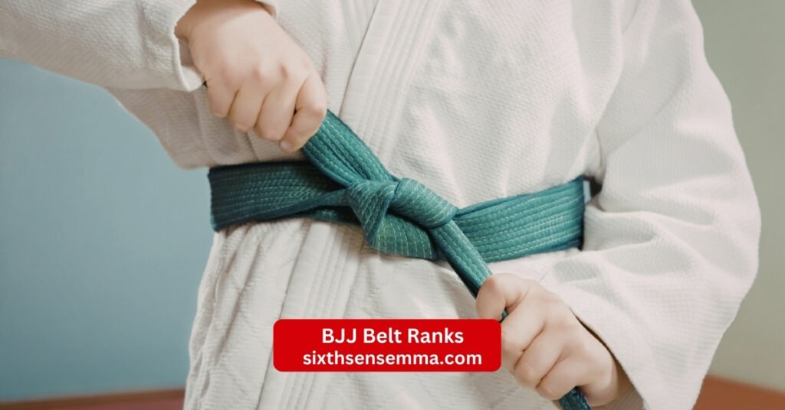
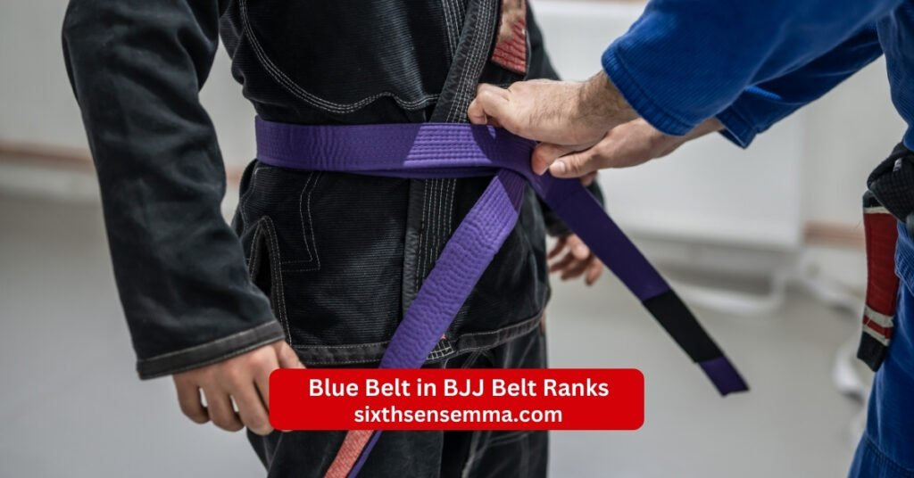
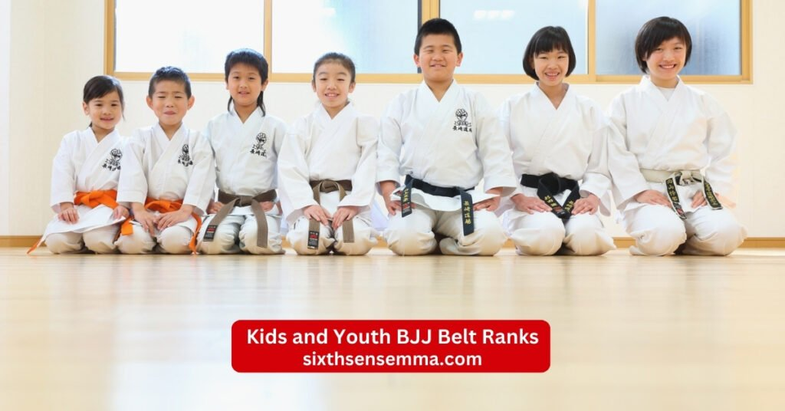

BJJ Belt Ranks Explained: Train, Progress, and Advance at SixthSense MMA

People often search for bjj close to me or bjj class near me when they want to start training in this martial art. At SixthSense MMA we offer classes that cover bjj with gi and help students grasp core moves like bjj guard and bjj guard positions. Many come for open mat bjj near me sessions to practice freely. Bjj belt ranks mark the path in brazilian jiu jitsu where each belt level shows growth. This system provides a clear way to track skills unlike some martial art types. For example questions arise on boxing vs muay thai for self-defense or kickboxingor boxing for self defence but in bjj the focus stays on ground work. Students ask what martial art is best for self defense and best martial art to learn for self defense often pointing to brazilian jiu-jitsu for its real world use.
Adult BJJ Belt Ranks Explained
Adults follow the adult belt system in bjj belt ranks which builds from basics to expert levels. This bjj belt system uses colors to show skill level and the system is a structured way to measure growth. The international brazilian jiu jitsu federation sets rules for competitions and ibjjf requires students to meet standards. Belt promotions happen based on time spent training and performance. Each belt signifies a step in the art of brazilian jiu-jitsu where students refine techniques and continue to learn. The journey from white to black demands years and the belt is not the end but a milestone.
White Belt in BJJ Belt Ranks
The white belt acts as the entry point in bjj belt ranks for adults. This white belt level introduces core ideas in brazilian jiu jitsu. New students wear the white belt and learn escapes plus positions. The belt is the first step where stripes on the white belt mark small wins. Years as a white belt vary but typically takes one to two years to move up. Belts begin here and progress within that belt comes from practice. Belt represents a fresh start in the ranking system. At this stage focus on basics like bjj guard holds. Belt typically sees students spar lightly.
Blue Belt in BJJ Belt Ranks
Next comes the blue belt in bjj belt ranks after proving basics. This blue belt level demands broader skills in brazilian jiu-jitsu. Students at blue belt teach lower ranks sometimes. Belt reflects growing grasp of moves like bjj open guard. Next belt rank needs at least two years often. Within each belt like blue add four stripes for progress. Journey from white belt to here builds base. Belt typically takes effort in classes. Aspect of jiu-jitsu at blue includes sweeps and subs. Higher belt goals motivate training.

Purple Belt in BJJ Belt Ranks
The purple belt marks mid point in bjj belt ranks. This purple belt level shows strong technique in brazilian jiu jitsu. Bjj purple belt holders instruct and compete well. They master bjj guard positionsand bjj open guard techniques. Belt in bjj at purple means teaching ability. Next belt requires one and a half years min per ibjjf. Purple belt refines strategy. Achievement in bjj shines here.
Brown Belt in BJJ Belt Ranks
Brown belt nears expert in bjj belt ranks. This brown belt level polishes all skills for black. Brown belt students lead sessions often. They handle complex spots like closed guard vs open guard bjj. Belt progression to here takes eight years total avg. Years of dedicated training pay off. Belt signifies near mastery.
Black Belt in BJJ Belt Ranks
The black belt stands as top color in bjj belt ranks for most. This black belt level names one a professor. Bjj black belt means deep knowledge. Achieve the black belt after ten years avg. Bjj black holders teach full time. Jiu-jitsu black belt commands respect. Jitsu black belt continues growth. White belt to black belt journey ends here for basics but white to black belt leads to more. Belt integrity matters at black. Beyond black come degrees then coral belt like red and black belt or red and white belt. Red belt is rare with questions on how many brazilian jiu jitsu red belts are there.
Kids and Youth BJJ Belt Ranks
Kids use a unique setup in bjj belt ranks to match growth. The bjj belt system for youth adds colors like green belt before adult ranks. International brazilian rules guide this. 16 years of age shifts to adult. Belt color changes often with stripe. Gracie methods influence many schools. Belt ranking system keeps it fun. International brazilian jiu-jitsu federation oversees comps. Brazilian jiu-jitsu students young ones start early.

How BJJ Belt Ranks Work for Children
For children bjj belt ranks begin at white then add grays yellows oranges greens. This jiu-jitsu belt system uses stripes for sub steps. Belt ranks in brazilian jiu jitsu for kids have thirteen total. Belt rankings in brazilian jiu jitsu start age four with gray. Levels of brazilian jiu jitsu belts build step by step. Brazilian jiu jitsu belt ranks include white gray yellow orange green. Brazilian jiu jitsu belts are colorful. Brazilian jiu jitsu belt rankings track young progress. Belts in bjj for kids motivate. Brazilian jiu-jitsu belt promotions happen often. Progression through the bjj belt is steady.
Differences Between Kids and Adult BJJ Belt Ranks
Kids and adult bjj belt ranks differ in colors, timing, and structure to match development in brazilian jiu-jitsu. Youth systems feature extra belts like green belt and gray levels, while adults advance straight from white belt to blue. Bjj belt ranking for kids adds stripes faster with more total bjj belts—often thirteen—including yellow, orange, and green for motivation. Promotions happen quicker in youth with changes sometimes yearly and less time spent training per step, transitioning at 16 years of age to the adult belt system.
Time Required for Progression in BJJ Belt Ranks
Students often wonder how long the path takes in bjj belt ranks. The bjj belt system rewards steady work over quick jumps. Time spent training plays a big role in moving up. Years of dedicated training shape the journey from white belt to higher colors. At SixthSense MMA we guide members through this belt progression with realistic timelines. Belt typically takes months or years based on effort. Progression through the bjj belt stays personal yet follows common patterns in brazilian jiu jitsu.
Average Time Spent at Each BJJ Belt Rank
Most adults spend one to two years as a white belt building basics. The white belt level focuses on survival and simple moves. Moving to blue belt level often needs at least two years total from start. Blue belt holders stay there for two to three years on average. Purple belt level adds another two to three years where bjj purple belt skills deepen. Brown belt level lasts one to two years polishing everything. Reaching black belt level totals around ten years for many. Achieve the black belt marks a major step but degrees continue after.
Factors That Affect Promotion Speed
Several elements speed or slow bjj belt ranks growth. Class frequency matters since more sessions mean faster refine of moves. Age and athletic background help some grasp bjj guard faster. Competition results can push belt promotions sooner. Time spent training weekly like three to five days shortens waits. Injuries pause progress. Skill level shown in rolls influences timing. Continue to learn attitude keeps momentum. Within each belt mastery decides the next belt. Ibjjf requires a minimum periods that set floors. Belts are expected to demonstrate full command before advance.
BJJ Belt Ranks Promotion Criteria
Promotions in bjj belt ranks follow clear standards set by coaches. The belt ranking system looks at multiple areas. Belt promotions reward those who show readiness. Brazilian jiu-jitsu belt promotions happen during special events often. Next belt rank comes after meeting set marks. Higher belt status reflects real ability in brazilian jiu jitsu.
Technical Skills and Knowledge
Coaches check grasp of techniques at each belt level. White belt needs solid escapes and basic subs. Blue belt requires chains and defense. Purple belt demands creative attacks from bjj guard positions including bjj open guard techniques. Brown belt expects seamless flow in all spots like closed guard vs open guard bjj. Black belt shows teaching level depth. Deep understanding of jiu-jitsu grows with belt rank. Belt signifies command of the curriculum. Belt reflects study outside class too.
Sparring Performance and Consistency
Live rolls reveal true progress in bjj belt ranks. Consistent training without long breaks helps. Performance against same or higher belt peers matters. Ability to apply moves under pressure counts. Sparring shows if someone survives or controls. Regular attendance builds the needed reps. Consistency over flash leads to stripe adds and belt promotions.
Instructor Evaluation in BJJ Belt Ranks
The coach decides final belt promotions based on daily observation. They watch attitude and help to others. Instructor notes how students handle losses and wins. Belt integrity stays high with fair calls. Gracie lineage schools like many follow traditional views. Ibjjf rules guide comp focused places but mat time rules all.
Benefits of BJJ Belt Ranks at SixthSense MMA
The bjj belt ranks structure delivers strong advantages to everyone training at SixthSense MMA. This belt system creates focus and turns sessions into clear rewards. Members follow visible paths in brazilian jiu jitsu classes where each step builds on the last. The setup ties directly to real mat skills and personal growth.
Clear Skill Progression Through BJJ Belt Ranks at SixthSense MMA
Students track their development without guesswork using bjj belt ranks. Every belt color signals fresh skills mastered in bjj with gi sessions. Stripes on the belt highlight smaller advances within each belt. This clear view lets members spot weak areas and plan targeted drills. Progress within that belt turns steady and easy to measure over months.
Motivation and Goal Setting for Students at SixthSense MMA
Bjj belt ranks supply concrete targets that drive daily effort. The next belt or even a single stripe sparks extra focus during rolls. Short range stripe aims keep energy high week to week. The longer sight toward a bjj black belt forms lasting training routines. Achievement in bjj lands as real wins at every promotion ceremony.
Recognition of Technical and Mental Growth in BJJ Training
Belt promotions honor both sharp techniques and tough mindset shifts. Mental strength builds through hard sparring rounds and comebacks. Each belt means better control under stress over time. The belt represents quiet personal victories that carry off the mat into daily life.
Builds Discipline and Long-Term Commitment in Brazilian Jiu-Jitsu
The extended journey from white belt onward teaches true sticking power. Years of dedicated training carve out real patience in every student. Pushing through flat periods without quitting strengthens inner resolve. This belt system is a structured road that values steady presence in brazilian jiu-jitsu above quick results.
Boosts Confidence Through Structured BJJ Belt Ranks System
Every fresh belt rank stands as hard proof of growing ability. Build confidence flows from seeing moves succeed against resisting partners. Taking on higher belt opponents and holding ground raises self belief fast. The system provides constant evidence of steady gains in jiu jitsu skills and overall presence.
BJJ Belt Ranks vs Other Martial Arts Belts
Bjj belt ranks stand out when placed next to systems in many other martial arts. The belt ranking system in bjj demands more mat time than most. Students often compare belt rankings in martial arts across styles. For example karate belt tiers move faster in some schools. Martial art belt ranks vary widely from quick promotions to strict paths. Best martial arts aranked lists note how bjj earns respect for its depth. Questions like what martial art is best for self defense highlight brazilian jiu-jitsu ground focus over striking arts.
Differences Between BJJ Belt Ranks and Karate Belts
Karate belt tiers often include more colored belts with shorter stays. Many karate schools promote every few months using tests. Bjj belt ranks skip quick jumps and require live proof. Karate martial arts weapons add katas while bjj stays body vs body. Bjj belts count five main adult colors against ten or more in some karate lines. Belt progression in karate ties to forms but bjj needs rolling success. Jiu jitsu belt rankings reward sparring over set routines.
Why BJJ Belt Ranks Take Longer
Bjj belt ranks stretch out because skills must work against resistance. Years of dedicated training prove techniques in real rolls. White to black belt in bjj averages ten years while other arts cut it shorter. Belt typically takes longer due to complexity in bjj guard and chains. Ibjjf requires a minimum time frames that block fast tracks. Deep understanding of jiu-jitsu needs thousands of reps. Journey from white to black tests ego and builds true ability.
Tips to Progress Faster in BJJ Belt Ranks
Students find ways to move quicker through bjj belt ranks by building strong routines outside basic attendance. Smart choices in practice and life habits shorten the journey from white belt to higher levels. Quality over quantity in drills helps refine techniques faster while good recovery prevents setbacks. Focus on fixing personal weak spots and repeating fundamentals until they feel natural.
Training Consistency and Discipline
Regular mat time stands as the biggest driver for faster growth in bjj belt ranks. Aim for three to five sessions each week to build the required time spent training and keep skills sharp. This steady rhythm adds stripes sooner and sets the stage for solid belt promotions. Avoid extended breaks that stall momentum and practice discipline in sleep nutrition and rest to support full effort in every class.
Importance of Patience in BJJ Belt Ranks
Hurrying through bjj belt ranks often backfires by creating shallow knowledge that cracks under pressure. True deep understanding of jiu-jitsu comes when patience allows techniques to settle during tough phases. Plateaus serve as hidden teachers revealing gaps and building resilience. Embrace the extended journey from white enjoy daily improvements and remember the belt is not the end but part of ongoing growth.
Why Choose SixthSense MMA for BJJ Belt Ranks
SixthSense MMA provides an ideal setting to pursue bjj belt ranks with focused brazilian jiu-jitsu programs. Members benefit from proven methods and a community that values real progress. Classes blend structure with personal attention to help every student advance at their best pace.
Structured BJJ Belt Ranks System Based on Real Skill
The bjj belt system at our gym links every promotion directly to demonstrated ability on the mat. Belt promotions occur only when a student shows full command rather than fixed dates. This approach ensures the next belt rank truly matches skill level and maintains strong belt integrity across all students.
Experienced Brazilian Jiu-Jitsu Coaches
Our coaches carry extensive personal experience through bjj belt ranks and know how to guide others effectively. They quickly identify individual weaknesses and offer targeted fixes for steady improvement. Seasoned perspective guarantees fair and accurate decisions on stripe additions and belt advancements.
Clear Promotion Criteria for BJJ Belt Ranks
Students always understand exact expectations for moving up in bjj belt ranks thanks to transparent guidelines. Rules openly address technical mastery live rolling results and overall attitude. This clarity eliminates confusion and lets members focus fully on meeting standards for smooth belt progression.
Supportive and Professional Training Environment
The atmosphere at SixthSense MMA encourages partners to push each other positively during bjj belt ranks training. Helpful rolling sessions accelerate learning while everyone respects safety and effort. A clean organized space with professional standards keeps every class productive and enjoyable for long-term commitment.
Proven Student Progress and Success Stories
Numerous members have advanced to blue belt purple belt brown belt and even black belt through our programs. Real results appear in competition victories teaching contributions and personal transformations. These success stories inspire newcomers and confirm the effective path we provide for bjj belt ranks.
Contact Us
Reach out to the team at SixthSense MMA for questions about BJJ Belt Ranks or any class. The academy in Coppell Texas welcomes inquiries from student of every age and level. Instructor and coach stand ready to help with enroll details or trial session. This martial arts school focuses on self defense skills and physical fitness in a supportive environment. Contact options make it simple to start your path in martial arts in coppell. Many find the dojo easy to connect with for kid programs or adult mixed martial arts.
- Phone 469 972 7800
- Email: info@sixthsensemma.com
- Location: 817 S MacArthur Blvd #100 Coppell TX 75019 United States
Conclusion
Bjj belt ranks offer a rewarding road in brazilian jiu-jitsu. The system provides growth markers that reflect true ability. Train steady enjoy the process and watch progress build. SixthSense MMA stands ready to support every step toward your black belt and beyond.
Follow Us on Social Media
Stay connected with Sixth Sense MMA through our social media channels. Follow us for class updates, training tips, and a closer look at our self defense community.
FACEBOOKFAQ’s
The standard adult belt progression in Brazilian Jiu-Jitsu (BJJ) follows this order: white belt (beginner), blue belt, purple belt, brown belt, and black belt (expert level). Beyond black belt, higher degrees include coral belts (red-black for 7th degree, red-white for 8th degree) and the red belt (9th and 10th degrees, reserved for grandmasters). Each belt typically features up to four stripes to mark progress, and promotions depend on time, skill, and instructor discretion. Kids under 16 use additional belts like grey, yellow, orange, and green.
Keanu Reeves holds a white belt in BJJ. He trains extensively for film roles, particularly in the John Wick series with instructors like the Machado brothers, but focuses on practical techniques rather than formal competition or belt progression.
Mark Zuckerberg holds a blue belt in BJJ. He earned this promotion in 2023 from coach Dave Camarillo after competing in tournaments as a white belt, winning medals in gi and no-gi divisions.
The highest ranked belt in BJJ is the red belt, awarded at the 9th degree (current living grandmasters) and 10th degree (reserved for the pioneers like the Gracie brothers; no living 10th-degree holders exist today). It signifies lifelong contribution to the art.
Conor McGregor holds a black belt in BJJ. He received this promotion in 2023 from his longtime coach John Kavanagh after years as a brown belt, recognizing his grappling skills alongside his MMA career.
Neither Brazilian Jiu-Jitsu (BJJ) nor traditional Japanese Jiu-Jitsu (JJJ) is universally “better”—it depends on goals. BJJ excels in ground grappling, submissions, and sport competition, making it highly effective for one-on-one self-defense and MMA due to live sparring and leverage focus. JJJ emphasizes standing techniques, strikes, throws, joint locks, and weapons defense from samurai roots, better suiting multi-opponent or armed scenarios. BJJ proves more tested in modern combat sports, while JJJ preserves broader traditional self-defense.
Elon Musk’s exact BJJ belt rank remains undisclosed publicly. He trains sporadically with black belts like Lex Fridman and has a background in judo and karate, but no confirmed formal BJJ promotion exists.
No credible evidence shows Jim Carrey training BJJ or holding any belt. Rumors of a brown belt appear unfounded, with no photos, videos, or statements confirming involvement.
The rarest belt in Jiu-Jitsu is the red belt (9th or 10th degree). Fewer than 50 people have ever received it, reserved for grandmasters with decades of contribution. The 10th degree exists only for BJJ pioneers (no living holders), making the 9th-degree red belt the rarest achievable today.
Train with us in Coppell
The first class is free. Shorts, a t-shirt and a water bottle. We lend the rest.
Book a free class